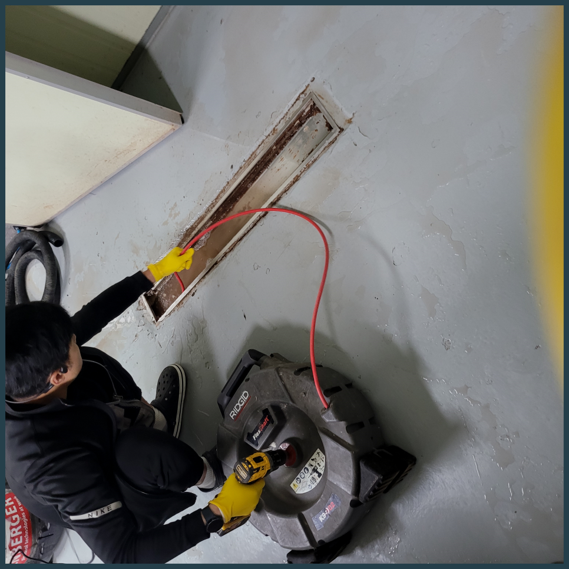
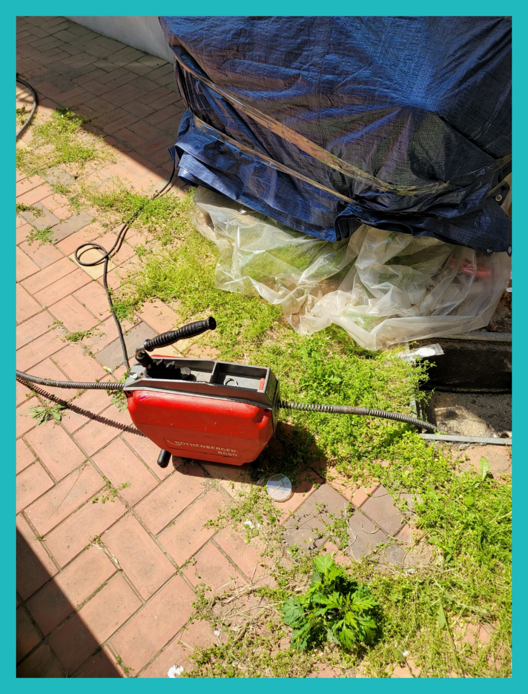
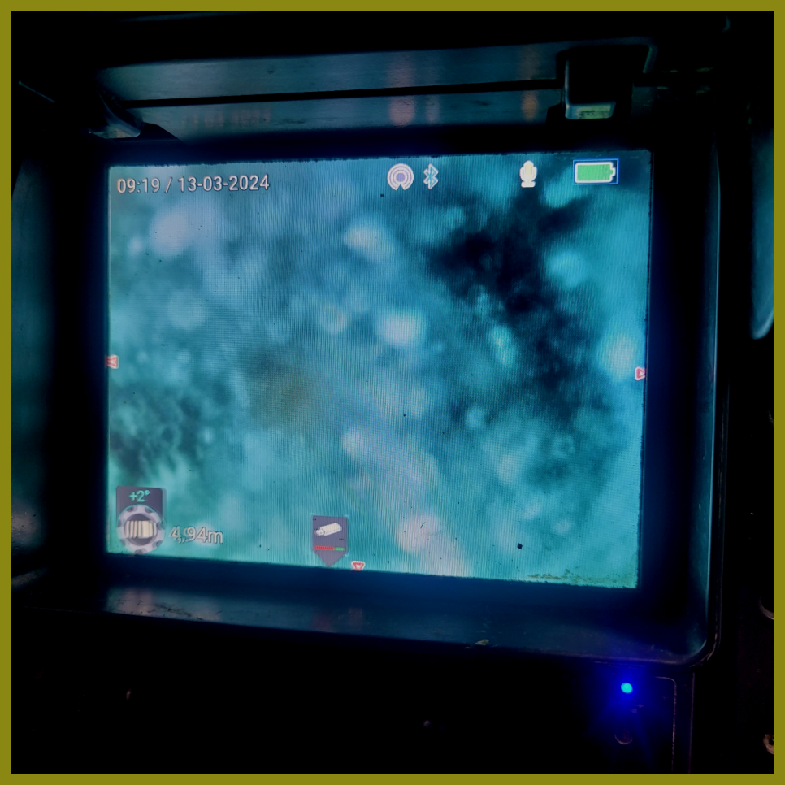
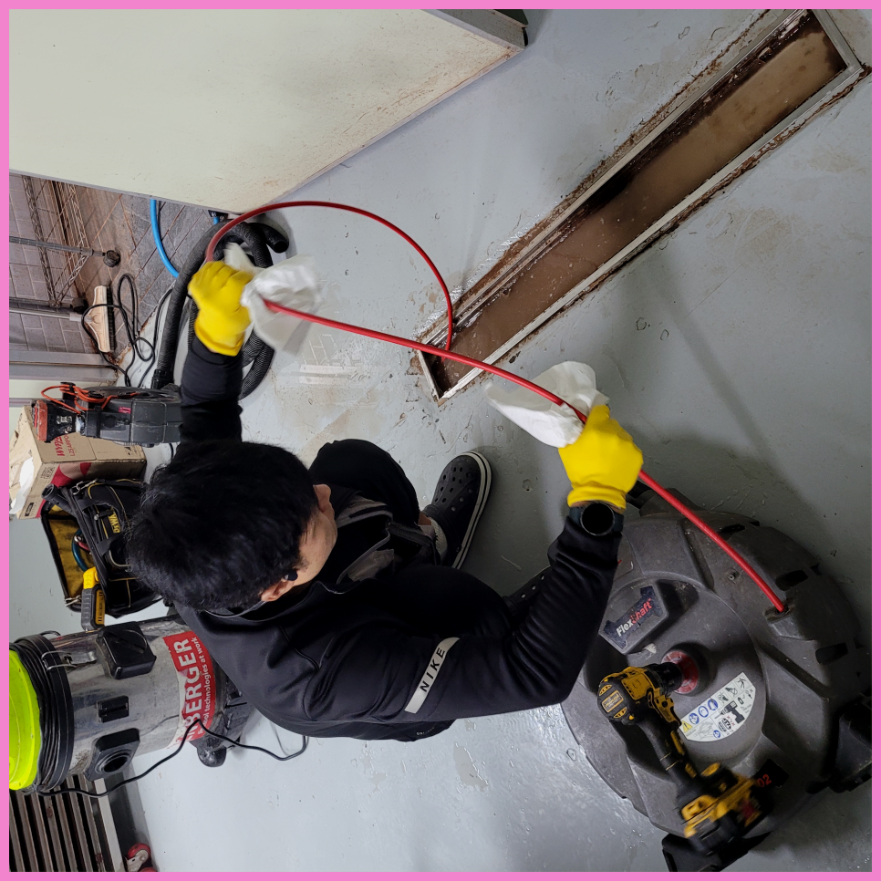
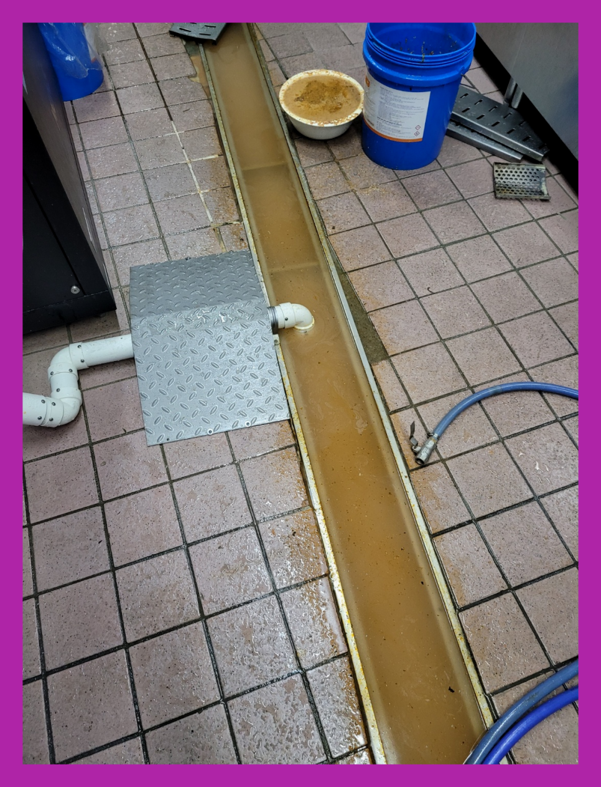
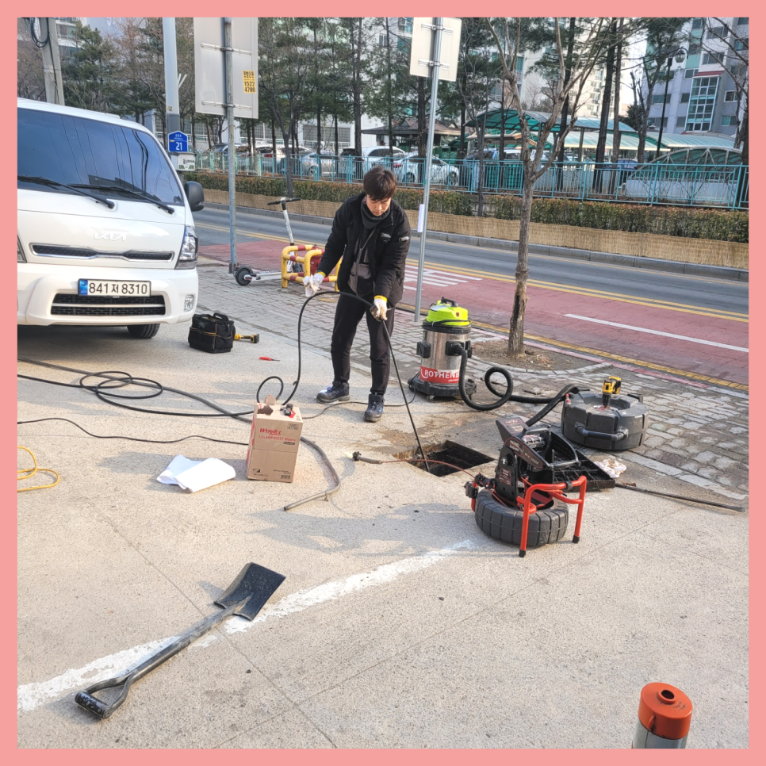

🏠 양평 양서면 세탁실 하수구막힘 화장실 배수구역류 배관청소 뚫는업체
용인 싱크대막힘 전문 시공 후기

📋 작업 개요
- 위치: 용인
- 서비스 유형: 싱크대막힘, 변기막힘, 하수구막힘, 배관막힘, 역류해결, 뚫는업체, 배관청소, 설비공사, 배관보수
- 작업 일시: 2024. 3. 15. 20:58
- 업체명: 하수구수사대 (010-5615-2118)
🔍 문제 상황
반갑습니다^^
설비전문업체 "하수구수사대"를 찾아주셔서 감사드립니다.
보이지 않는 곳에서 우리의 생활이 불편하지 않도록 제 역할을 꿋꿋이 하는 것 중 하나가 바로 배수배수관입니다. 가려져 있지만 수많은 사람들이 자유롭게 쓰고 배출한 물을 운반해 주는데요.
일상에서 이용하는거와 달리 배수구 물들이 원활하게 빠져나가지 못해도 변함없이 낳좋아질수 있어서 이 시간부터 집중해주시길 바랍니다.
양평 양서면 세탁실 하수구막힘 화장실 배수구역류 배관청소 뚫는업체

🔎 원인 분석
💡 전문가 진단: 양평 양서면 세탁실 하수구막힘 화장실 배수구역류 배관청소 뚫는업체
만약 이런 문제가 계속해서 발생한다면, 배관전문 업체에 도움을 청하는 것이 좋아요. 현장에서 역류 문제를 해결하려면 배관배관 내부를 내시경 카메라로 확인하고, 적절한 방법으로 이물질을 제거해야 하거든요.
배출관 안쪽에 이물질이 적을때에는 셀프로 처리를해도 훼손없이 눈으로볼수있는 곳까지는 쉽게 제거할수있어요. 반면에사태가 엄중할경우엔 자가로진행하는처치로는 나아지기 어렵죠. 구두주걱같은 기다란것들을 넣게된다면 배출관안쪽으로 흘려가서 잔해물질등과 뒤섞여서 더욱심각한문제로 번질수있죠.
배출구 내부에 어느 정도 이물질이 쌓여있는지 확인하기 위해서는 내시경 카메라를 넣고 원인을 파악하는데요. 기름 슬러지가 원인이 되어 막혔다면 내시경 카메라가 뿌옇게 보이기 때문에 일단 석션 장비로 통수 작업을 시켜준 뒤에 내시경을 다시 넣게 됩니다.
배수구막힘을 자세히 보려면 내시경장비를 투입해서 상황이 얼마나 진행이 되었는지 찾아봐야 해요. 배관은 비좁고 잘 안 보여 우리의 시각으로 볼 수가 없으니 전문장비인 내시경장비를 배수구 속에 투입시켜 배관안을 상세하고 확인하고 작업을 진행합니다.
대부분의 경우에는 제대로 배수관막힘을 해결을 하지 못하고 또다시 막히거나 배관 손상으로까지 이어질 수 있게 되는 것입니다. 그러므로 빠르고 정확한 해결을 위해서는 전문 업체를 통해서 해결을 하시는 것이 필요합니다.

🔧 작업 과정
배관의 내부 상태부터 확인을 하기 위해서 배수관내시경 카메라로 살펴보았는데요. 하수구의 바로 아래쪽으로는 트랩이 설치가 되어 있는 구조였습니다. 배관 내부에는 인테리어 공사 시에 들어간 석회질도 함께 있었는데요.
배수관배관 속에 있던 이물질들을 전체적으로 제거해 주고 석션기를 사용해서 추가 작업으로 시원하게 흡입했더니 상당하게 많은 양의 이물질이 분쇄되어 올라온 것을 확인할 수 있었습니다.
물이 계속 넘쳐 바닥이 엉망인 상황이었으며 이에 따라 불쾌한 악취는 물론 곰팡이까지 생성되었습니다. 이제야 심각성을 깨닫게 된 고객님은 후기가 좋은퇴수 업체를 알아보기 시작했고 그렇게 저희와 연락이 닿은 것이라고 합니다. 유선을 통해 공사 기간 및 어떻게 시공이 진행되는지에 대하여 전체적인 안내를 한 후 불편 사항을 해결해 드리기 위해 바로 현장을 방문합니다.
안쪽에위치한 기름때들을 강력한압력으로 청소하는 석션기가있고 기계의헤드에 붙어있는 360도로회전하는체인으로 하수 이물질을제거할수있는 스케일링기계도 갖춰져있습니다
내시경 카메라를 내부 깊숙이 넣어 살펴보니 외부로 빠지는 곳에서 90도로 꺾이는 수직 퇴수구배관에서도 이물질이 아주 쌓여있었습니다. 아무래도 이물질이 물살을 타고 내려가면서 물이 벽에 강하게 충격하게 되어 쌓여있었을 것으로 판단되었습니다.
배관 관리 방법, 청소방법 등을 알려드리는 저희들은 부담 없는 가격과 친절한 서비스로 하수관배관 케어를 도와드립니다. 나에게 꼭 필요하던 서비스로 더욱 나은 주방을 만들어보세요.
아무리 촘촘한 거름망을 써도 얇은 머리카락은 걸리지 않고 몇 가닥씩 들어갈 수 밖에 없는데 석회가 가득 들어차 있는 배관배관이라면 당연히 몇 가닥의 머리카락이나 모래와 같은 이물질도 큰 문제를 만들 수 있습니다. 이런 방법을 예방하기 위해서는 석회 제거제를 사용하거나 배관배수 클리너로 청소를 해주는 것이 좋습니다.
우리는 12개월 내로 다시 배출구막히면 즉각 방문 드리고 아무 보수 없이 다시금 뚫어드립니다. 한차례 뚫어드릴 때 재발 없이 조치할 자신이 있기 때문입니다.


✅ 작업 완료
아무런 하수관업체에다 연락하지 마시고 꼼꼼하게 알아보신 후에 확실하게 문제 해결을 해줄 수 있는 업체를 선택하셔야 합니다. 그래야만 같은 하수관문제가 재발하는 것을 막을 수 있기에 신중한 선택하실 수 있길 바라겠습니다.
#하수구막힘 #하수구뚫음 #하수구역류 #씽크대막힘 #싱크대역류 #오수관막힘 #하수구청소 #욕실하수구막힘 #변기막힘 #하수구뚫는비용 #싱크대수리 #화장실막힘




⚠️ 주방 싱크대 배관 막힘 예방 수칙
- ✅ 기름기가 묻은 식기나 프라이팬은 설거지 전 키친타올로 반드시 기름때를 닦아내세요.
- ✅ 주기적으로 싱크대 개수대에 뜨거운 물을 가득 받아 한 번에 내려 배관 내부 기름을 씻어내세요.
- ✅ 배수구 거름망을 미세한 필터로 사용하시고 음식물 찌꺼기가 틈으로 새어 들지 않게 관리하세요.
- ✅ 베이킹소다와 식초를 뜨거운 물과 함께 일주일에 한 번씩 부어주면 배관 살균과 막힘 예방에 좋습니다.
💡 핵심 정리
- 확실한 장비 작업(내시경 점검 및 샤프트 스케일링)으로 원인을 뿌리 뽑습니다.
- 작업 후 1년 이내에 동일한 부위 재발 시 100% 무상 A/S 서비스를 보장합니다.
- 서울 · 경기 · 인천 전 지역에 24시간 언제든 긴급 출동할 수 있도록 항시 대기 중입니다.
❓ 자주 묻는 질문 (FAQ)
🚨 용인 싱크대막힘 문제로 고민이신가요?
정확한 원인 진단과 확실한 시공으로 재발 없는 해결을 약속드립니다.
24시간 긴급 출동 | 서울 · 경기 · 인천 전지역 | 1년 내 재발 시 무상 A/S